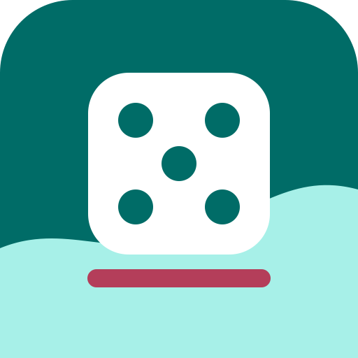

Offline-first Partyspiel
Seemops Trinkspiel
Ein lokales Trinkspiel fuer Erwachsene mit eigenen Karten, Leveln, Pack-Vorlagen, Backups und optionalem manuellem Backend-Sync.
- Keine Werbung
- Keine Analytics
- Kein Konto fuer lokales Spiel
- Manuelle Exporte und Backups